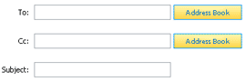
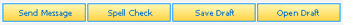
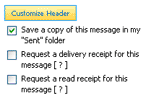
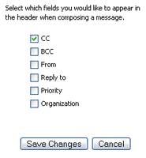
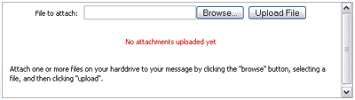
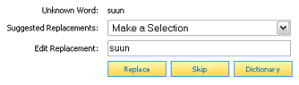

On the Compose page, users may write messages and send email messages with optional attachments. Using the Compose page may include
the following tasks:
Composing a New Message
The basic function of the Compose Message page in EMU Webmail is the same as that in most other email clients - to write and send an email
message to one or more recipients.

First, enter one or more email addresses in the "To" field. You may optionally enter the nickname for any users you have previously
stored in your Addressbook. You may also select contacts from your Addressbook by clicking the "Select" button to the
right of the "To", "Cc", and "Bcc" fields. Doing so will launch a contact selection window from which you may select one or more contacts. Note, the "To" field
requires at least one valid email address, while the "Cc" and "Bcc" fields are optional.
Next, you may optionally give the message a subject, after which you may write the body of the message in the large text field provided. Be sure to add any
attachments and select any special send options you require before clicking the "Send Message" button
located both above and below the composition fields.

Upon clicking "Send Message", your email will be sent and you will be returned to the Inbox.
Message Sending Options
To the right of the composition fields are several additional options you may take advantage of when sending messages.

Customizing the message header allows you to add and remove composition fields and is discussed in greater detail in the
next section.
The checkbox labeled 'Save a copy of my message in my "Sent" folder' does just that when the message is sent and the option is enabled.
A local "Sent" folder, if it does not already exist, will be created in your account and a copy of your message will dropped in. The name of the "Sent"
folder is automatically generated and may contain additional characters which identify the year and month. These Sent folder names may be customized
by the EMU Webmail Administrator.
The checkbox labeled "Request a delivery receipt for this message" enables a delivery receipt option that is found in most email clients. If this box
is checked when your message is sent, you will automatically receive a brief message back from the message recipient(s) indicating your original
message was successfully delivered. Similar to a delivery receipt is a read receipt. With a read receipt, you will be informed when the user opens and reads your message.
Note, several mail clients, such as MS Outlook, optionally allow recipients to deny delivery and read receipt requests. If the
recipient elects to do so, you would not receive a receipt.
Clicking the "Customize Headers" button to the right of the composition fields launches a "Customize Headers" popup window. This window lists all the
possible composition fields that may be customized before sending.

Fields that correspond to a checked checkbox will, when the form is saved, now appear on the Compose Message page. Those that are not checked, will not
appear. The settings for your customized header are stored and used each time you start a new composition.
Adding Attachments to Messages
Files of virtually any type, including images, text documents, and much more, can be attached and sent via email in the form of Attachments.
Clicking the "Select Attachments" button at the bottom of the composition fields list launches the "Attachments" popup window.

Add one or more attachments to your email message by first clicking the "Browse" button in Step 1 and selecting a file from your harddrive. Then click
the "Upload File" button in Step 2 to upload your file from your harddrive to the EMU Webmail system. Note, files must be selected and uploaded (in Steps
1 and 2) individually.
Once you have selected and uploaded all the attachments you would like to send, verify the list of files in Step 3 and click
"Save Attachments". If you have already selected and uploaded a file which you later wish to remove from the list of attachments, click the appropriate
checkbox(es) from the list of uploaded attachments and click the "Delete" button that is provided.
Spell Checking Your Message
At any time on the Compose Message page, you may check your message for spelling errors by clicking on the "Spell Check" button from the message options.
Doing so takes you to the Spell Check page which steps through your message and compares each typed word to an internal dictionary.

Any word that does not match a word in the dictionary is marked as a potential spelling error. The spell check system identifies the potential spelling
error, offers a list of suggested replacement words, as well as offers a text field for editing a replacement word. Selecting or editing a replacement
word, then clicking the "Replace" button replaces the problem word with your new selection. Clicking the "Skip" button ignores the problem word and steps
to the next potential spelling error.
Once you have run through the potential spelling errors and are satisfied with your changes (if any), click the
"Finish Spell Check" button which returns you to the Compose Message page with your changes intact.
Saving and Opening Message Drafts
For whatever the reason may be, there are times when you are unable to finish composing a message. However, this does not mean you must lose what you've
composed up to that point. Save a message in progress by clicking the "Save Draft" button from the message options.
You may later open and resume a saved draft by clicking the "Open Draft" button from the message options. Doing so will launch a "Drafts" popup window
where you may select which stored draft you wish to continue. Once you have made your selection, the Compose Message page will refresh with your
saved content.
Note, the "Open Draft" button does not appear among the message options unless you have previously saved a draft. You can save as many
message drafts as you like, however they take up space on your account just like all other messages.